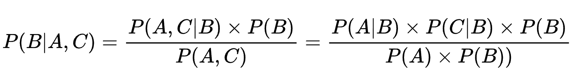

This step applies a Naïve Bayes classifier to categorize vehicle prices based on vehicle characteristics. A Naïve Bayes classifier is a relatively simple model that trains and predicts quickly. It can efficiently train and predict on rather large datasets, such as the data in this project, and can handle a wide range of categorical and continuous variables. So what is a Naïve Bayes algorithm? As a representative of probability-based machine learning algorithms, the Naïve Bayes algorithm is based on the naïve assumption that each data characteristic is independent of the others and operates based on which label is most probable to classify the data when a new input is received. To approach the Bayesian formula, the conditional probability concept must be understood first. A conditional probability is the probability that something else will happen, given that an event has occurred. Given two events, A and B, the probability of each event occurring is denoted by P(A) and P(B), and the conditional probability, such as "the probability that B occurs if A occurs," is denoted by P(B|A). In addition, problems such as "the probability that A and B occur at the same time" are called joint probabilities and are expressed as P(A∩B) or P(A, B). The formula for this is as follows.

By the way, P(A∩B), which is called the joint probability, is an operation that satisfies the properties of the commutative law: P(A∩B) = P(B∩A). The joint probability P(B∩A) can be reexpressed from the previous conditional probability formula. Since P(B∩A) = P(A∩B), the following expression is obtained.
The final expression, #5, is the Bayes formula. On its own, the Bayes formula may seem like a statement of the degree of relationship between two conditional probabilities. Still, it is a critical formula because it means that unknown future probabilities can be estimated from known probabilities
So, how does Bayesian theory apply to machine learning? The Naïve Bayes algorithm has been described as a probabilistic data classification machine learning algorithm, but it's a little easier to understand if we replace A and B with terms relevant to machine learning. Let's set up a case with data consisting of one independent variable and one (categorical) dependent variable, as follows:
Event A: Some data has an independent variable value of 3.
Event B: Some data has a dependent variable of 7. (labeled 7)
In this situation, when a new input comes in, and the value of the independent variable is 3, what is the probability that it will be labeled as 7?
This is represented by the expression above, which is called the posterior probability we are interested in and can be calculated with the Bayesian formula.
Applying the above equation, P(input=3|label=7), P(label=7), and P(input=3) are all probability values that can be calculated from the data already available for training. In a Bayesian-based classification model, all of these posterior probabilities are calculated and compared, and the data is classified based on the highest probability.
The challenge in this project is that, unlike the example above, the modeling needs to be performed based on data with multiple vehicle characteristics, so there are more than two independent variables. In other words, considering the above equation, the complexity of the equation increases significantly when there are more than two independent variables, and the calculation is complex and requires many operations. Therefore, it is usually assumed that all independent events are independent in Naïve Bayesian models. Independent events do not affect each other's occurrence, and the combined probability of independent events can be calculated as the product of the single occurrence probabilities of each event. Based on these assumptions, the expression for calculating the posterior probability is as follows.
